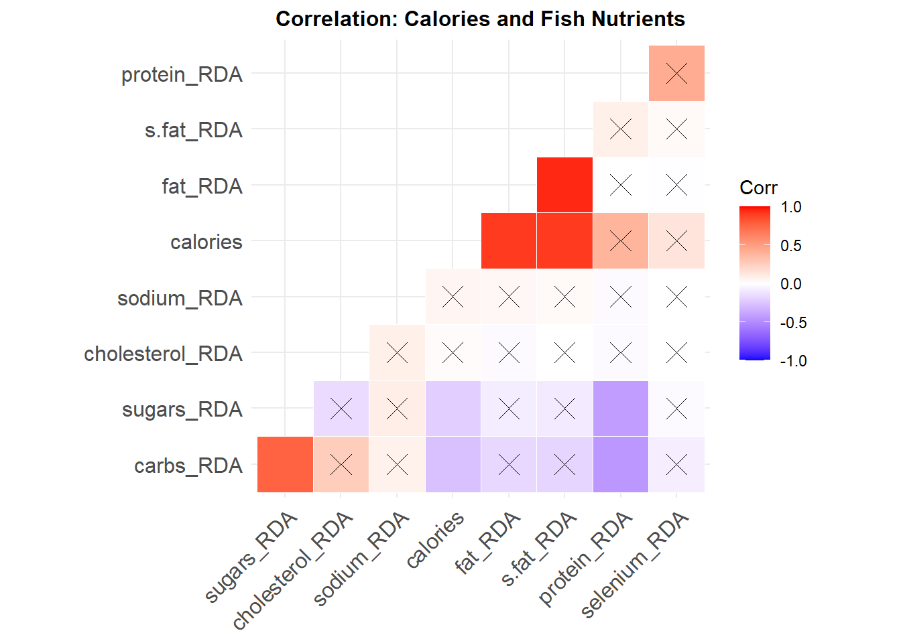
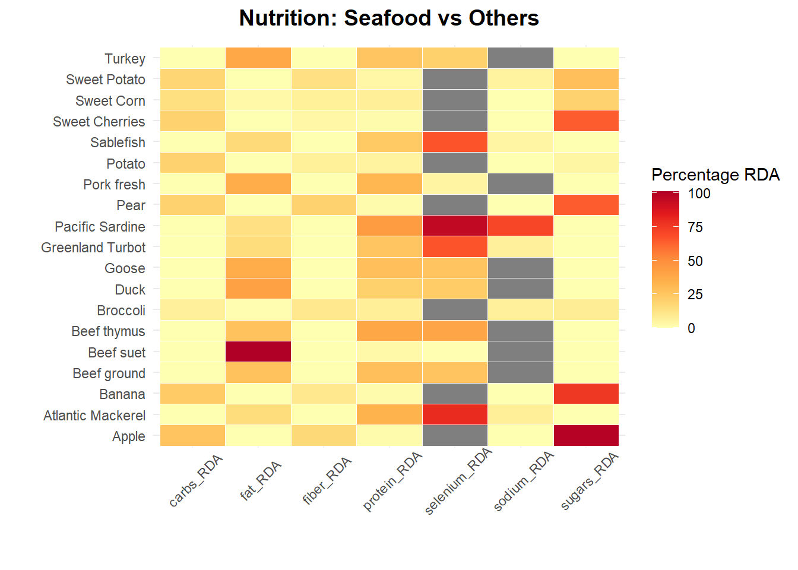

Fisheries
Seafood: The Ultimate Food 🐟?
As more people are opting against red meat diet for plant based and sea food, this might be a good time to analyze aquatic food sources. The environmental impact of industrialized red meat production and health concerns has made sea food a favourable alternative diet also termed as “pescatarian diet”.
Utilizing visualization, this project explores:
- Sustainability of seafood. Goal: Exploring how sustainable the fishing rates are across the fishing regions in USA. Environmentally and Fish populations.
- Nutritional value of seafood. Goal: Establishing the nutritional value of fish species found across US marine. Compare species, identify trends and comparison with other food sources e.g. beef.
This project primarily analyzes the fisheries management dataset from the National Oceanic and Atmostpheric Administration (NOAA). Accessing the latest data using their FishWatch API.
If you are not familiar with pulling data using APIs, this project might be helpful as this was also my first attempt utilizing an API.
Accessing the data
#Create a function to request the endpoint and receive a dataframe converted from JSON
fish<- function(endpoint) {
url <- modify_url("https://www.fishwatch.gov", path = endpoint)
response<-GET(url)
#tracking status codes
if(http_error(response)){
print(status_code(response))
stop("Something went wrong.", call. = FALSE)
}
if(http_type(response)!="application/json"){
stop("API did not return json", call. = FALSE)
}
#Get content as text
json_text<- content(response, as="text")
dataframe<-fromJSON(json_text)
return(dataframe)
}
fish.df<-as_tibble(flatten(fish("/api/species?format=json")))
#Remain with variables useful in the analysis
fish.df<-fish.df%>%
select(2,7,8,12,14,17:19,26,29,32,33,36,41,45:47,
49,51,56)
var_name<-data.frame(names(fish.df))
var_name<-var_name%>%
rename(Variables=names.fish.df.)We have reduced it to the essential variables we shall use to evaluate some of the seafood being monitored by NOAA.
Using REGEX function to parse through the columns to remove html tags and make the data easier to sort through. This is the major first step to cleaning the dataset.
#The data contains html tags throughout the columns. Clean them out
cleanFun <- function(htmlString) {
return(gsub("<.*?>", "", htmlString))
}
fish.df<-data.frame(map(fish.df, cleanFun))Data Cleaning
Fishing Rates
#Categorize population(naive categorization using the first instance of the words "Above", "Unknown" and "Below")
fish.df<-fish.df%>%
mutate(population=ifelse(str_detect(Population, "[Aa]bove"), "Above target",
ifelse(str_detect(Population, "[Uu]nknown"), "Unknown",
ifelse(str_detect(Population, "[Bb]elow|Near"),"Below target", NA)))) ## Population Species
## 1 Above target 71
## 2 Below target 23
## 3 Unknown 13#Categorize their availability (Annual or seasonal)
fish.df<-fish.df%>%
mutate(availability=ifelse(str_detect(Availability, "[Yy]ear-?round"), "Year round", "Seasonal")) ## Availability Species
## 1 Seasonal 6
## 2 Year round 109For fish that are caught fresh in long periods of the year i.e. 6-8 months of the year, and are canned or frozen year long, are coded as available year-round.
Fish that are caught on strict seasonal basis e.g. June to October, together with fish that are sporadically caught i.e. Wreckfish, are categorized as seasonal.
#Categorize the fishing rates
##regex to capture overfishing
rate_regex="i?(closed|prohibited|[Rr]educe(d)?|quota|(rates))"
fish.df<-fish.df%>%
mutate(fishing_rate=ifelse(str_detect(Fishing.Rate, "[Rr]ecommended|Not"), "Stable",
ifelse(str_detect(Fishing.Rate,rate_regex),"Over", "Unknown"))) ## Fishing rate Species
## 1 Over 14
## 2 Stable 92
## 3 Unknown 1How the fishing rates were coded:
- Over: This include species are experiencing a mandated reduced fishing, species that are in regions where authorities have implemented quotas or rates to protect populations or fishing is out-right closed. e.g Sardines
- Stable: This include species that that are being fished at “recommended levels” within the fishing regions during the compilation of this data. e.g. Lobster
- Unknown: This single observation is for the California Market Squid whose fishing rate and populations have not be estimated by NOAA.
#Categorize the environmental impact of species
fish.df<-fish.df%>%
mutate(env_effects=ifelse(str_detect(Environmental.Effects, "benefits"), "Net benefit",
ifelse(str_detect(Environmental.Effects, "state"),
"Federal monitoring","Unknown"))) ## Environmental Effects Species
## 1 Federal monitoring 2
## 2 Net benefit 6Unfortunately, not all species have their environmental effects recorded. Oysters, Mussels, Clams and Geoducks have been quoted to have a “net benefit on the environment as they remove excess nutrients and improve water quality”. Sugar kelp have the same benefits with the additional carbon fixing where they turn carbon-dioxide into oxygen.
The Atlantic Salmon and Sablefish are being actively monitored by the federal and state authorities to ensure their fishing have minimal impact on the environment.
Fish Nutrition
#Convert the columns to numeric and rename to carry their respective units
#Calories column to numeric
fish.df$Calories<-parse_number(fish.df$Calories)
#Carbohydrates
fish.df$Carbohydrate<-parse_number(fish.df$Carbohydrate)
fish.df<-fish.df%>%
rename("carbs (g/ser)" = Carbohydrate)
#Cholesterol
fish.df$Cholesterol<-parse_number(fish.df$Cholesterol)
fish.df<-fish.df%>%
rename("cholesterol (mg/ser)" = Cholesterol)
#Fat
fish.df$Fat..Total<-parse_number(fish.df$Fat..Total)
fish.df<-fish.df%>%
rename("fat (g/ser)" = Fat..Total)
#Fiber
##This column has one value in mg and the rest are in g
#unique(fish.df$Fiber..Total.Dietary)
##This column has one value in mg and the rest are in g. Convert the mg value to g
fish.df$Fiber..Total.Dietary<-parse_number(fish.df$Fiber..Total.Dietary)
##convert the mg value to g
fish.df$Fiber..Total.Dietary<-ifelse(fish.df$Fiber..Total.Dietary==34, 34/1000, fish.df$Fiber..Total.Dietary)
fish.df$Fiber..Total.Dietary<-round(fish.df$Fiber..Total.Dietary, 2)
fish.df<-fish.df%>%
rename("fiber (g/ser)" = Fiber..Total.Dietary)
#Protein
fish.df$Protein <-parse_number(fish.df$Protein)
fish.df<-fish.df%>%
rename("protein (g/ser)" = Protein)
#Saturated fat
fish.df$Saturated.Fatty.Acids..Total <-parse_number(fish.df$Saturated.Fatty.Acids..Total )
fish.df$Saturated.Fatty.Acids..Total<-round(fish.df$Saturated.Fatty.Acids..Total, 2)
fish.df<-fish.df%>%
rename("saturated fatty acids (g/ser)" = Saturated.Fatty.Acids..Total)
#Selenium
##Some values are in percentage of daily intake and some in mcg
#unique(fish.df$Selenium)
fish.df$Selenium <-parse_number(fish.df$Selenium)
fish.df$Selenium<-ifelse(fish.df$Selenium==160, 55*1.6, fish.df$Selenium) #55 mcg is the USA daily intake for adults and children above 14.
fish.df<-fish.df%>%
rename("selenium (mcg/ser)" = Selenium)
#Sodium
fish.df$Sodium <-parse_number(fish.df$Sodium)
fish.df<-fish.df%>%
rename("sodium (mg/ser)" = Sodium)
#Sugars
fish.df$Sugars..Total <-parse_number(fish.df$Sugars..Total)
fish.df<-fish.df%>%
rename("sugars (g/ser)" = Sugars..Total)
#Serving Weight
fish.df$Serving.Weight <-parse_number(fish.df$Serving.Weight)
fish.df<-fish.df%>%
rename("serving weights (g)" = Serving.Weight)Analysis: Environmental Impact
Regional Fishing
fig1<-fish.df%>%
count(noaa.fisheries.region)%>%
ggplot(aes(x=reorder(noaa.fisheries.region, n), y = n,
fill=noaa.fisheries.region))+
geom_bar(stat = "identity")+
theme_minimal()+
theme(plot.title = element_text(color="black", size=14,
face="bold", hjust = 0.5),
axis.ticks = element_blank(),
axis.title.x = element_text(color="black", size=12),
axis.title.y = element_blank(),
legend.position = "none")+
scale_y_continuous(expand = c(0, 0))+
coord_flip() +
geom_col(alpha = 0.8, width = 0.85) +
labs(title = "Distribution of fish species within \nNOAA fisheries regions",
x="Region",
y="Number of Species")
mrg <- list(l = 10, r = 40,
b = 15, t = 70,
pad = 0)
#ggplotly allows for an interactive chart
fig1<-ggplotly(fig1)%>%
layout(margin=mrg)%>%
style(hoverinfo = 'none')
fig1
The most species are found in the Greater Atlantic area while the least are found in the Pacific Island fishery region.
This means chances are, most of the fish people consume in the US comes from the Greater Atlantic area! But does this mean the region is subject to over fishing?
Regional Fishing Rates
We can examine how the fishing rates are in every region in the US. The goal is to identify regions that are experiencing over fishing or are within recommended fishing levels.
#Availability vs Fishing rate
plotdata <- fish.df%>%
drop_na(fishing_rate)%>%
group_by(noaa.fisheries.region, fishing_rate)%>%
summarize(n = n())%>%
mutate(pct = n/sum(n),
lbl = scales::percent(pct))
fig2<-plotdata%>%
ggplot(aes(x=noaa.fisheries.region, y=pct, fill=fishing_rate))+
geom_bar(stat = "identity", position = "fill")+
theme_minimal()+
theme(plot.title = element_text(color="black", size=12,
face="bold", hjust = 0.5),
axis.ticks = element_blank(),
legend.title = element_blank(),
axis.title.x = element_text(color="black", size=12),
axis.title.y = element_text(color="black", size=12))+
scale_y_continuous(breaks = seq(0, 1, .2),label = percent)+
geom_text(aes(label = lbl), size = 3,
position = position_stack(vjust = 0.5))+
geom_col(alpha = 0.8, width = 0.85) +
labs(title = "Fishing Rate by Fishing Region",
x="",
y="Percent")
#Plotly to make the chart more interactive
fig2<- ggplotly(fig2)%>% add_annotations( text="Fishing Rate",
xref="paper", yref="paper",
x=1.02, xanchor="left",
y=0.9, yanchor="bottom",
legendtitle=TRUE, showarrow=FALSE )%>%
layout(legend=list(y=0.9, yanchor="top"),xaxis=list(tickangle=-45))%>%
style(hoverinfo = 'none')
fig2The majority of fishing regions are experiencing stable fishing rates, well within recommended levels for existing populations. The Greater Atlantic fishing zone has the highest levels of over fishing as compared to the other regions (20%).
| Blue Mussel | Sable Fish |
|---|---|
 |
 |
| The blue mussel has been observed to have a net benefit on the environment while boasting rich levels of protein (21% RDA). | The sable fish is available year round and is a great source for protein (24% RDA), low on carbs (0% RDA) and sodium (4% RDA). But the species is under monitoring from federal and state authorities to ensure its fishing has minimal impact on the environment. |
According to research from Canadian scientists, seafood has one of the lowest carbon footprint as compared to other food sources. It is estimated that in the US, each kilo of fish resulted in 1.6 kilos of carbon. Meanwhile, the environmental cost of red meat such as beef and lamb, which is estimated to range from 50 kilos to as much as 750 kilos of carbon per kilo of meat.
Seafood is inherently more environmentally friendly as compared to red meat. Its fishing levels, according to NOAA in the US, are well within recommended levels allowing fish populations to sustainably thrive.
Analysis: Nutritional Value
Seafood Nutrition
#Using the RDA information from US Dietary guidelines.
#a) Dietary guidelines as a percentage of food calories
fish.df<-fish.df%>%
mutate(fat_RDA=`fat (g/ser)`*100/93,
s.fat_RDA=`saturated fatty acids (g/ser)`*100/13,
carbs_RDA=`carbs (g/ser)`*100/130,
sugars_RDA=`sugars (g/ser)`*100/25,
protein_RDA=`protein (g/ser)`*100/56,
cholesterol_RDA=`cholesterol (mg/ser)`*100/300,
fiber_RDA=`fiber (g/ser)`*100/30,
sodium_RDA=`sodium (mg/ser)`*100/1300,
selenium_RDA=`selenium (mcg/ser)`*100/55)
fish.df<-fish.df %>%
mutate_at(vars(ends_with("RDA")), funs(round(., 2)))fish_longer<-fish.df%>%
pivot_longer(cols = c(fat_RDA, s.fat_RDA, carbs_RDA, sugars_RDA, protein_RDA,
cholesterol_RDA, fiber_RDA, sodium_RDA, selenium_RDA),
names_to="nutrient",
values_to="percent")
fig3<-fish_longer%>%ggplot(aes(x=nutrient, y=percent, fill=nutrient))+
geom_boxplot()+
theme_minimal()+
theme(plot.title = element_text(color="black", size=14,
face="bold", hjust = 0.5),
axis.text.x = element_text(angle = 45,),
axis.ticks = element_blank(),
legend.title = element_blank(),
axis.title.x = element_blank(),
axis.title.y = element_text(color="black", size=12),
legend.position = "none")+
labs(title="Seafood nutritional value",
x= "Nutrient",
y= "Percentage RDA")+
scale_x_discrete(breaks=c("carbs_RDA","cholesterol_RDA","fat_RDA","fiber_RDA",
"protein_RDA", "s.fat_RDA","selenium_RDA",
"sodium_RDA","sugars_RDA" ),
labels=c("Carbohydrate", "Cholesterol", "Fat", "Dietary Fiber",
"Protein","Saturated Fatty Acids", "Selenium",
"Sodium", "Sugars"))
fig3<-ggplotly(fig3)
fig3It looks like most fish species are rich in protein, selenium and cholesterol. With the exception of Atlantic Bigeye Tuna and Pacific Blue Marin, all fish species have nutrients that are within the recommended dietary allowance in the USA.
All species show very low amounts of sugars, fat and saturated fatty acids, which is good for heart health. For anyone looking for a low carb diet, fish is the answer. They have very low carbohydrate per serving.
#Trend of fish calories and their nutrients
nut.labs<-c("Fat", "Saturated Fatty Acids", "Carbohydrate", "Sugars",
"Protein", "Cholesterol", "Dietary Fiber", "Sodium", "Selenium")
names(nut.labs)<-c("fat_RDA", "s.fat_RDA", "carbs_RDA", "sugars_RDA", "protein_RDA",
"cholesterol_RDA", "fiber_RDA", "sodium_RDA", "selenium_RDA")
fig6<-fish_longer%>%ggplot(aes(x=calories, y=percent, color=nutrient, group=species))+
geom_point(shape=1)+
theme_minimal()+
theme(plot.title = element_text(color="black", size=12,
face="bold",hjust = 0.5),
legend.title = element_blank(),
axis.title.x = element_text(color="black", size=12),
axis.title.y = element_text(color="black", size=12),
panel.spacing.y = unit(1, "lines"))+
labs(title="Relationship between Calories and Nutrients",
x= "Calories",
y= "Percentage RDA")+
facet_wrap(~nutrient, labeller = labeller(nutrient=nut.labs),
scales="free_y")
#Plotly tends to mess up axis titles from ggplots. One might have to tweak around the margins to get the perfect layout
fig6<- ggplotly(fig6, tooltip = c("species"))%>%
hide_legend()
#This helps find out how plotly has listed the annotations
#str(fig6[['x']][['layout']][['annotations']])
#Locates the x position of the yaxis titles
#fig6[['x']][['layout']][['annotations']][[2]][['x']]
#move the y-axis title more left and x-axis title lower
fig6[['x']][['layout']][['annotations']][[2]][['x']] <- -0.05
fig6[['x']][['layout']][['annotations']][[1]][['y']] <- -0.04
fig6 %>% layout(margin = list(l = 75, t=75))It would appear that the calories of fish have weak negative relationship with the amount of carbohydrates and sugars. While there is no significant relationship between fish calories with dietary fibers, cholesterol and selenium. But there is a strong relationship between fish calories and fat (r = 0.91), saturated fat (r = 0.90) and protein (r = 0.39).
So for people trying to avoid fat and saturated fatty acids, fish might not be the ideal dish for you. But for protein loading gym enthusiasts? seafood is a good snack.

Comperative Quadrant
Looking at the four significant nutrients found in seafood i.e. fat, saturated fats, carbohydrates and protein, cholesterol, i utilized quadrants to group seafood in 4 groups based on their average nutritional value.
#fat
cal_mean<-mean(fish.df$calories, na.rm = TRUE)
f.per_mean<-mean(fish.df$fat_RDA, na.rm = TRUE)
fig8<-fish.df%>%
mutate(quadrant = case_when(calories > cal_mean & fat_RDA > f.per_mean ~ "Q1",
calories <= cal_mean & fat_RDA > f.per_mean ~ "Q2",
calories <= cal_mean& fat_RDA <= f.per_mean ~ "Q3",
TRUE ~ "Q4"))%>%
ggplot(aes(x=calories, y=fat_RDA, color= quadrant, group=species)) +
geom_point() +
lims(x=c(50,250),y=c(1,20)) +
theme_minimal()+
theme(plot.title = element_text(color="black", size=12, face="bold",
hjust = 0.5),
axis.title.x = element_text(color="black", size=10),
axis.title.y = element_text(color="black", size=10))+
labs(title="Calories vs Fat \n(average values)",
x= "Calories",
y= "Percentage RDA") +
geom_vline(xintercept = cal_mean) +
geom_hline(yintercept = f.per_mean)+
annotate("text", x=65, y=1.7, label= "Low calories \nLow fat", size=2.5) +
annotate("text", x =65, y=17, label = "Low calories \nHigh fat", size=2.5)+
annotate("text", x=230, y=1.7, label= "High calories \nLow fat", size=2.5) +
annotate("text", x =230, y=17, label = "High calories \nHigh fat", size=2.5)
mrg3 <- list(l = 10, r = 10,
b = 10, t = 100,
pad = 0)
fig8<- ggplotly(fig8, tooltip = "species")%>% #the tooltip allows highlighting of species
layout(margin=mrg3)
fig8#S.fat
cal_mean<-mean(fish.df$calories, na.rm = TRUE)
sf.per_mean<-mean(fish.df$s.fat_RDA, na.rm = TRUE)
fig9<-fish.df%>%
mutate(quadrant = case_when(calories > cal_mean & s.fat_RDA > sf.per_mean ~ "Q1",
calories <= cal_mean & s.fat_RDA > sf.per_mean~ "Q2",
calories <= cal_mean & s.fat_RDA <= sf.per_mean ~ "Q3",
TRUE ~ "Q4"))%>%
ggplot(aes(x=calories, y=s.fat_RDA, color= quadrant, group=species)) +
geom_point() +
lims(x=c(0,250),y=c(1,20)) +
theme_minimal()+
theme(plot.title = element_text(color="black", size=12, face="bold",
hjust = 0.5),
axis.title.x = element_text(color="black", size=10),
axis.title.y = element_text(color="black", size=10),
legend.text=element_text(size=8))+
labs(title="Calories vs Saturated Fatty Acids \n(average values)",
x= "Calories",
y= "Percentage RDA") +
geom_vline(xintercept = cal_mean) +
geom_hline(yintercept = sf.per_mean)+
annotate("text", x=25, y=2, label= "Low calories \nLow sat. fat", size=2.5) +
annotate("text", x =25, y=16, label = "Low calories \nHigh sat. fat", size=2.5)+
annotate("text", x=210, y=2, label= "High calories \nLow sat. fat", size=2.5) +
annotate("text", x =210, y=16, label = "High calories \nHigh sat. fat", size=2.5)
mrg3 <- list(l = 10, r = 10,
b = 10, t = 100,
pad = 0)
fig9<- ggplotly(fig9, tooltip = "species")%>%
layout(margin=mrg3)
#Repeat this for any nutrient of interest
fig9Above graphs depict a nutritional value quadrant for the fish species found within the NOAA region. For all intents and purposes, the species found in quadrant 1 in each graph have the best value for calories and their respective nutritional component.
As human diet differ across communities, some might be looking for different levels of nutrients. It is important to be aware of how calories relate to your diet of choice. Also to debunk any misguided information one might have had prior.
Comparative analysis
To be able to compare against other food sources, we have to bring in data from other online sources.
Vegetables
Accessing vegetable food nutrition data data from data.world. You can download the whole CSV file and clean it on R, but i prefer querying (SQL) the data i need on data.world and only downloading parts that i need.
--SQL Code to only get top 4 vegetables by calories
SELECT *
FROM nutritionalfacts_fruit_vegetables_seafood
WHERE food_type LIKE "%vegetables%"
ORDER BY calories DESC
LIMIT 4;Fruits
--SQL Code to only get top 4 vegetables by calories
SELECT *
FROM nutritionalfacts_fruit_vegetables_seafood
WHERE food_type LIKE "%fruits%"
ORDER BY calories DESC
LIMIT 4;For Animal nutrition information, i collected information from the USDA National Nutrient Database.
Beef
--SQL Code to only get top 4 beef by calories
SELECT *
FROM nndb_flat
WHERE foodgroup LIKE "%beef%" AND shortdescrip LIKE "%meat%"
ORDER BY energy_kcal DESC
LIMIT 4;Pork
--SQL Code to only get top 4 pork products by calories
SELECT *
FROM nndb_flat
WHERE foodgroup LIKE "%pork%" AND shortdescrip LIKE "%meat%"
ORDER BY energy_kcal DESC
LIMIT 4;Poultry
--SQL Code to only get top 4 poultry products by calories
SELECT *
FROM nndb_flat
WHERE foodgroup LIKE "%poultry%" AND shortdescrip LIKE "%meat%"
ORDER BY energy_kcal DESC
LIMIT 4;Import the trimmed data and finish manipulating the values. Finally subset a dataset that will contain 4 different fruits, vegetables, seafood and data on beef, pork, and poultry.
The goal is to have comparable values. I selected fruits and vegetables with the highest calories. This will be the same with the fish species selected.
#Convert their nutritional values to RDA
nutrition<-nutrition%>%
mutate(fat_RDA=fat_g*100/93,
carbs_RDA=carb_g*100/130,
sugars_RDA=sugar_g*100/25,
protein_RDA=protein_g*100/56,
fiber_RDA=fiber_g*100/30,
sodium_RDA=sodium_g*100/1300,
selenium_RDA=selenium_mcg*100/55)
nutrition<-nutrition %>%
mutate_at(vars(ends_with("RDA")), funs(round(., 2)))
nutrition_longer<-nutrition%>%
pivot_longer(cols = c(12:18),
names_to = "nutrient",
values_to = "value")
fig12<-nutrition_longer%>%
ggplot(aes(y=food, x=nutrient, fill=value))+
geom_tile(colour="white",size=0.25, na.rm = TRUE)+
theme_minimal()+
scale_fill_distiller(palette = "YlOrRd", direction=+1)+
labs(x = "",
y = "",
title = "Nutrition: Seafood vs Others",
fill="Percentage RDA")+
theme(plot.title = element_text(hjust = 0.5, size = 14, face="bold",
margin = margin(t = 0, r = 0, b = 10, l = 0)),
axis.title.y = element_text(margin = margin(t = 0, r = 10,
b = 0, l = 0)),
axis.title.x = element_text(margin = margin(t = 0, r = 0,
b = 10, l = 0)),
axis.text.x = element_text(angle=45, vjust=0.7))
fig12
#If you prefer an interactive heatmap, plotly works great. Just remove the comment # from the code below
#vals <- unique(rescale(c(nutrition_longer$value)))
#o <- order(vals, decreasing = FALSE)
#cols <- col_numeric("Greens", domain = NULL)(vals)
#colz <- setNames(data.frame(vals[o], cols[o]), NULL)
#plot4 <- plot_ly(nutrition_longer,
#x = ~nutrient, y = ~food,
#z = ~value, colorscale = colz, type = "heatmap"
#)%>% layout(legend=list(title="Percentage RDA"),
#xaxis=list(title=""),
#yaxis=list(title=""))Note: Grey tiles indicate observations that are lacking data. One might scrap the web for missing data and fill them in. For consistency, i only used data from the sources i listed earlier (which has some missing values for some observations).
#Trend of fish calories and their nutrients
nut.labs<-c("Fat", "Carbohydrate", "Sugars","Protein",
"Dietary Fiber", "Sodium", "Selenium")
names(nut.labs)<-c("fat_RDA", "carbs_RDA", "sugars_RDA", "protein_RDA",
"fiber_RDA", "sodium_RDA", "selenium_RDA")
fig13<-nutrition_longer%>%ggplot(aes(x=calories, y=value,
color=category, group=food))+
geom_point()+
theme_minimal()+
theme(plot.title = element_text(color="black", size=14, face="bold",hjust = 0.5),
legend.title = element_blank(),
axis.title.x = element_text(color="black", size=12),
axis.title.y = element_text(color="black", size=12),
panel.spacing.y = unit(1, "lines"))+
labs(title="Relationship between Calories and Nutrients",
x= "Calories",
y= "Percentage RDA")+
facet_wrap(~nutrient, labeller = labeller(nutrient=nut.labs),
scales="free_y", ncol = 2)
#Plotly tends to mess up axis titles from ggplots. One might have to tweak around the margins to get the perfect layout
fig13<- ggplotly(fig13, tooltip = c("food"))
#This helps find out how plotly has listed the annotations
#str(fig13[['x']][['layout']][['annotations']])
#Locates the x position of the yaxis titles
#fig13[['x']][['layout']][['annotations']][[2]][['x']]
#move the y-axis title more left and x-axis title lower
fig13[['x']][['layout']][['annotations']][[2]][['x']] <- -0.04
fig13[['x']][['layout']][['annotations']][[1]][['y']] <- -0.04
fig13 %>% layout(margin = list(l = 65, t=75))From the two visualization, the following observations are seen:
Fruits: They are a great source for sugars, dietary fiber and carbohydrates. Plant based produce has always been rich in starch and complex carbohydrates.
Vegetables: They rank high in dietary fiber and carbohydrates. Like fruits, they have very little fat and protein while also registering the least amount of calories.
Red Meat: Beef has high amounts of protein and substantial fat. Similar to pork and poultry. red meat also has the most calories of the food groups analyzed.
Seafood: Has similar amount of carbs to red meat but with less calories. Same with dietary fiber and sugars. So if you are looking to cut your calorie intake but maintain levels of carbs, fiber and sugars, seafood is a great alternative to red meat. Seafood also has less fat compared to red meat while showing similar or slightly more protein levels. Lower calories, less fat and similar protein levels? Seafood is a great alternative to red meat, nutritionally!
Closing Remarks
Seafood in the USA is not facing dangers of over-fishing allowing for sustainable fish populations to thrive. Seafood has significantly lower levels of carbon footprint as compared to livestock keeping and crop producing. Environmentally, a seafood diet helps the planet more than a red meat diet.
At the same time, seafood is showing similar or better nutritional values for protein, dietary fiber and sugars with less fat and calories. Anyone looking to maintain these nutritional values will do much better consuming seafood diet than red meat.